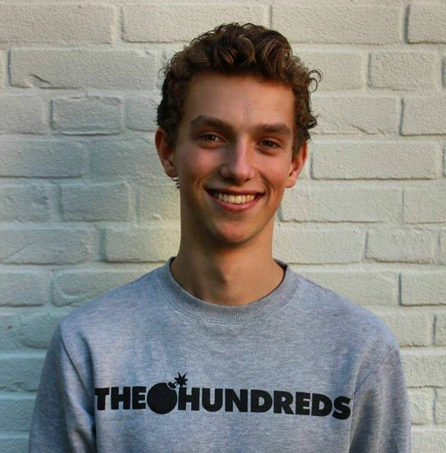

Welkom op mijn porftfoliowebsite!
Ik ben Freek van der Weij, 18 jaar oud en eerstejaars
Informatiekundestudent aan de UvA. Op deze site kan je alle opdrachten vinden die ik heb gemaakt voor het vak
Multimedia en Interactieontwerp. Hieronder vallen user journeys, user tests, verschillende ontwerpen en het eindproject voor het
bedrijf Tinker.
Veel plezier!